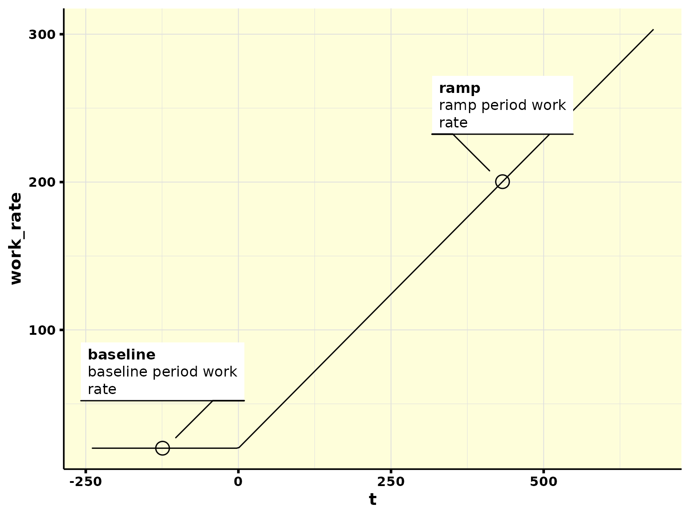
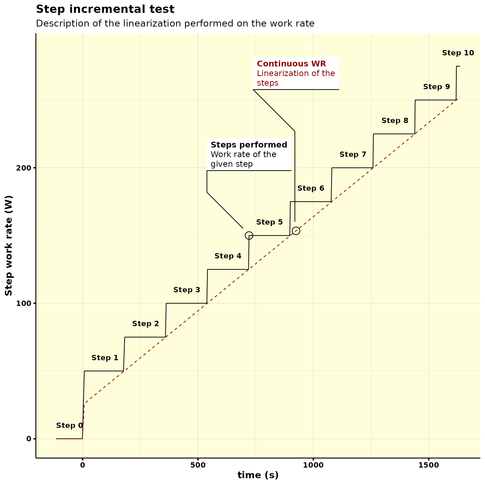

If you have an incremental test, whippr can also help
you out! In this vignette you will learn how to:
- Normalize your data (i.e., recognize baseline period, adjust work rates, and adjust time column);
- Recognize “bad breaths” and remove them;
- Calculate mean response time through various methods (work in progress);
- Calculate maximal oxygen uptake (and analyze whether a plateau existed in your data);
- Estimate ventilatory thresholds (work in progress).
All of the above work both in a ramp and in a step incremental test.
Normalize your data
To get started, let’s read in the example data from a ramp incremental test that comes with the package. This is a test that had the following protocol:
- 4-min baseline period at 20 W;
- ramp increase of 25 W/min.
library(whippr)
library(ggplot2)
library(dplyr)
#>
#> Attaching package: 'dplyr'
#> The following objects are masked from 'package:stats':
#>
#> filter, lag
#> The following objects are masked from 'package:base':
#>
#> intersect, setdiff, setequal, union
path_example <- system.file("ramp_cosmed.xlsx", package = "whippr")
df <- read_data(path = path_example, metabolic_cart = "cosmed")
df
#> # Metabolic cart: COSMED
#> # Data status: raw data
#> # Time column: t
#> # A tibble: 390 × 119
#> t Rf VT VE VO2 VCO2 O2exp CO2exp `VE/VO2` `VE/VCO2` `VO2/Kg`
#> <dbl> <dbl> <dbl> <dbl> <dbl> <dbl> <dbl> <dbl> <dbl> <dbl> <dbl>
#> 1 0 23.3 0.808 18.8 654. 579. 131. 34.6 28.7 32.4 8.53
#> 2 6 9.45 3.09 29.2 1111. 1038. 488. 152. 26.3 28.1 14.5
#> 3 10 14.3 1.87 26.8 1064. 963. 291. 93.4 25.2 27.8 13.9
#> 4 15 14.2 2.05 29.1 1136. 1032. 321. 101. 25.6 28.2 14.8
#> 5 19 13.4 2.05 27.5 1083. 999. 319. 103. 25.4 27.5 14.1
#> 6 24 13.3 2.08 27.7 1104. 1021. 323. 106. 25.1 27.2 14.4
#> 7 28 14.0 1.78 25.0 1017. 948. 274. 93.8 24.6 26.3 13.3
#> 8 33 11.4 2.11 24.2 971. 919. 326. 111. 24.9 26.3 12.7
#> 9 38 13.2 2.00 26.5 1008. 973. 315. 102. 26.3 27.2 13.1
#> 10 43 11.5 2.09 23.9 921. 904. 326. 109. 25.9 26.4 12.0
#> # ℹ 380 more rows
#> # ℹ 108 more variables: R <dbl>, FeO2 <dbl>, FeCO2 <dbl>, HR <dbl>,
#> # `VO2/HR` <dbl>, Load1 <dbl>, Load2 <dbl>, Load3 <dbl>, Phase <dbl>,
#> # Marker <lgl>, FetO2 <dbl>, FetCO2 <dbl>, FiO2 <dbl>, FiCO2 <dbl>, Ti <dbl>,
#> # Te <dbl>, Ttot <dbl>, `Ti/Ttot` <dbl>, IV <dbl>, PetO2 <dbl>, PetCO2 <dbl>,
#> # `P(a-et)CO2` <dbl>, SpO2 <dbl>, `VD(phys)` <dbl>, `VD/VT` <dbl>,
#> # `Env. Temp.` <dbl>, `Analyz. Temp.` <dbl>, `Analyz. Press.` <dbl>, …
df %>%
ggplot(aes(t, VO2)) +
geom_point(shape = 21, size = 4, fill = "white") +
theme_whippr()A few things to note:
- Our time column is not normalized. That is, we do not know explicitly what is baseline, and what is ramp;
- We do not have a work rate column.
All of the above will be fixed with the
incremental_normalize() function. Since we do not have a
work rate column, we will set the argument
work_rate_magic = TRUE. This argument will allow us to
calculate the work rates throughout the test.
ramp_normalized <- df %>%
incremental_normalize(
.data = .,
incremental_type = "ramp",
has_baseline = TRUE,
baseline_length = 240, ## 4-min baseline
work_rate_magic = TRUE,
baseline_intensity = 20, ## baseline was performed at 20 W
ramp_increase = 25 ## 25 W/min ramp
)
ramp_normalized
#> # Metabolic cart: COSMED
#> # Data status: raw data - ramp normalized
#> # Time column: t
#> # Test type: incremental
#> # Protocol: 240-s baseline at 20 W and a 25-W/min ramp
#> # A tibble: 390 × 121
#> t Rf VT VE VO2 VCO2 O2exp CO2exp `VE/VO2` `VE/VCO2` `VO2/Kg`
#> <dbl> <dbl> <dbl> <dbl> <dbl> <dbl> <dbl> <dbl> <dbl> <dbl> <dbl>
#> 1 -240 23.3 0.808 18.8 654. 579. 131. 34.6 28.7 32.4 8.53
#> 2 -234 9.45 3.09 29.2 1111. 1038. 488. 152. 26.3 28.1 14.5
#> 3 -230 14.3 1.87 26.8 1064. 963. 291. 93.4 25.2 27.8 13.9
#> 4 -225 14.2 2.05 29.1 1136. 1032. 321. 101. 25.6 28.2 14.8
#> 5 -221 13.4 2.05 27.5 1083. 999. 319. 103. 25.4 27.5 14.1
#> 6 -216 13.3 2.08 27.7 1104. 1021. 323. 106. 25.1 27.2 14.4
#> 7 -212 14.0 1.78 25.0 1017. 948. 274. 93.8 24.6 26.3 13.3
#> 8 -207 11.4 2.11 24.2 971. 919. 326. 111. 24.9 26.3 12.7
#> 9 -202 13.2 2.00 26.5 1008. 973. 315. 102. 26.3 27.2 13.1
#> 10 -197 11.5 2.09 23.9 921. 904. 326. 109. 25.9 26.4 12.0
#> # ℹ 380 more rows
#> # ℹ 110 more variables: R <dbl>, FeO2 <dbl>, FeCO2 <dbl>, HR <dbl>,
#> # `VO2/HR` <dbl>, Load1 <dbl>, Load2 <dbl>, Load3 <dbl>, Phase <dbl>,
#> # Marker <lgl>, FetO2 <dbl>, FetCO2 <dbl>, FiO2 <dbl>, FiCO2 <dbl>, Ti <dbl>,
#> # Te <dbl>, Ttot <dbl>, `Ti/Ttot` <dbl>, IV <dbl>, PetO2 <dbl>, PetCO2 <dbl>,
#> # `P(a-et)CO2` <dbl>, SpO2 <dbl>, `VD(phys)` <dbl>, `VD/VT` <dbl>,
#> # `Env. Temp.` <dbl>, `Analyz. Temp.` <dbl>, `Analyz. Press.` <dbl>, …We can see that now our data is aware of the two different phases in the test: baseline and ramp period:
ramp_normalized %>%
distinct(protocol_phase)
#> # Metabolic cart: COSMED
#> # Data status: raw data - ramp normalized
#> # Time column: t
#> # Test type: incremental
#> # Protocol: 240-s baseline at 20 W and a 25-W/min ramp
#> # A tibble: 2 × 1
#> protocol_phase
#> <chr>
#> 1 baseline
#> 2 rampAdditionally, a new column was created: work_rate:
ramp_normalized %>%
select(t, work_rate)
#> # Metabolic cart: COSMED
#> # Data status: raw data - ramp normalized
#> # Time column: t
#> # Test type: incremental
#> # Protocol: 240-s baseline at 20 W and a 25-W/min ramp
#> # A tibble: 390 × 2
#> t work_rate
#> <dbl> <dbl>
#> 1 -240 20
#> 2 -234 20
#> 3 -230 20
#> 4 -225 20
#> 5 -221 20
#> 6 -216 20
#> 7 -212 20
#> 8 -207 20
#> 9 -202 20
#> 10 -197 20
#> # ℹ 380 more rowsAnd we can also plot it to check what was done. Note that there is a constant-load during baseline (20 W), and then a constant increase in power output (25 W/min) during the ramp phase:
ramp_normalized %>%
plot_incremental()
We can therefore quickly analyze our peak power output as:
ramp_normalized %>%
slice_max(work_rate) %>%
select(work_rate)
#> # Metabolic cart: COSMED
#> # Data status: raw data - ramp normalized
#> # Time column: t
#> # Test type: incremental
#> # Protocol: 240-s baseline at 20 W and a 25-W/min ramp
#> # A tibble: 1 × 1
#> work_rate
#> <dbl>
#> 1 303.Step test
But what if we had a step-incremental test? How does the work rate transformation work? In a step test is important to have both the actual power output from each step, and also a linearization of the power output. To illustrate what I mean, let’s take a look at an example:
## get file path from example data
path_example_step <- system.file("step_cortex.xlsx", package = "whippr")
## read data from step test
df_step <- read_data(path = path_example_step, metabolic_cart = "cortex")
df_step
#> # Metabolic cart: CORTEX
#> # Data status: raw data
#> # Time column: t
#> # A tibble: 792 × 29
#> t VT AF `V'E (BTPS)` `V'max (BTPS)` FEetO2 FEetCO2 PetO2 PetCO2
#> <dbl> <dbl> <dbl> <dbl> <dbl> <dbl> <dbl> <dbl> <dbl>
#> 1 4.8 0.72 18.5 13.3 0.42 15.9 4.6 106. 30.8
#> 2 7.9 0.76 19.4 14.7 0.46 16.0 4.63 107. 31
#> 3 10.9 0.77 19.9 15.3 0.47 16.0 4.74 107. 31.7
#> 4 13.9 0.76 20 15.1 0.47 16.2 4.65 109. 31.1
#> 5 17.5 0.95 16.7 15.8 0.49 16.1 4.76 108. 31.8
#> 6 20.9 0.83 17.5 14.6 0.56 16.5 4.54 110. 30.4
#> 7 24.3 0.75 17.8 13.3 0.45 16.5 4.54 110. 30.4
#> 8 28.2 0.8 15.3 12.3 0.42 16.3 4.69 109. 31.4
#> 9 31.9 0.8 16.5 13.1 0.48 16.4 4.56 110. 30.5
#> 10 35.7 0.72 15.8 11.5 0.43 16.2 4.7 109. 31.4
#> # ℹ 782 more rows
#> # ℹ 20 more variables: `V'O2 (STPD)` <dbl>, `V'CO2` <dbl>, R <dbl>,
#> # `V'O2/kg` <dbl>, METS <dbl>, `V'E/V'O2` <dbl>, `V'E/V'CO2` <dbl>,
#> # `VD/VT (est)` <dbl>, HF <dbl>, La <chr>, W <dbl>, EU <dbl>, `EU/kg` <dbl>,
#> # CHO <dbl>, FETT <dbl>, EFF <chr>, `%AR` <dbl>, `V'O2/kg_Lean` <dbl>,
#> # `EE/kg_Lean` <dbl>, AR <dbl>Note that our data contains weird column names. So, for simplicity, let’s rename the VO2 column.
That is a test that had the following protocol:
- resting period (i.e, 0 W) for 2 minutes;
- step protocol starting at 50 W and increasing 25 W every 3 minutes.
df_step_renamed %>%
ggplot(aes(t, VO2)) +
geom_point(shape = 21, size = 4, fill = "white") +
theme_whippr()So, let’s first normalize our data:
step_normalized <- df_step %>%
incremental_normalize(
.data = .,
incremental_type = "step",
has_baseline = TRUE,
baseline_length = 120, ## 2 min baseline
work_rate_magic = TRUE,
baseline_intensity = 0, ## baseline was resting on the bike, so intensity is 0 W
step_start = 50, ## step protocol started at 50 W
step_increase = 25, ## step increase was 25 W
step_length = 180 ## the intensity increased every 3 minutes
)
step_normalized
#> # Metabolic cart: CORTEX
#> # Data status: raw data - step normalized
#> # Time column: t
#> # Test type: incremental
#> # Protocol: 120-s baseline at 0 W and 180-s steps of 25 W starting at 50 W
#> # A tibble: 792 × 33
#> t VT AF `V'E (BTPS)` `V'max (BTPS)` FEetO2 FEetCO2 PetO2 PetCO2
#> <dbl> <dbl> <dbl> <dbl> <dbl> <dbl> <dbl> <dbl> <dbl>
#> 1 -115. 0.72 18.5 13.3 0.42 15.9 4.6 106. 30.8
#> 2 -112. 0.76 19.4 14.7 0.46 16.0 4.63 107. 31
#> 3 -109. 0.77 19.9 15.3 0.47 16.0 4.74 107. 31.7
#> 4 -106. 0.76 20 15.1 0.47 16.2 4.65 109. 31.1
#> 5 -102. 0.95 16.7 15.8 0.49 16.1 4.76 108. 31.8
#> 6 -99.1 0.83 17.5 14.6 0.56 16.5 4.54 110. 30.4
#> 7 -95.7 0.75 17.8 13.3 0.45 16.5 4.54 110. 30.4
#> 8 -91.8 0.8 15.3 12.3 0.42 16.3 4.69 109. 31.4
#> 9 -88.1 0.8 16.5 13.1 0.48 16.4 4.56 110. 30.5
#> 10 -84.3 0.72 15.8 11.5 0.43 16.2 4.7 109. 31.4
#> # ℹ 782 more rows
#> # ℹ 24 more variables: `V'O2 (STPD)` <dbl>, `V'CO2` <dbl>, R <dbl>,
#> # `V'O2/kg` <dbl>, METS <dbl>, `V'E/V'O2` <dbl>, `V'E/V'CO2` <dbl>,
#> # `VD/VT (est)` <dbl>, HF <dbl>, La <chr>, W <dbl>, EU <dbl>, `EU/kg` <dbl>,
#> # CHO <dbl>, FETT <dbl>, EFF <chr>, `%AR` <dbl>, `V'O2/kg_Lean` <dbl>,
#> # `EE/kg_Lean` <dbl>, AR <dbl>, protocol_phase <chr>, work_rate <dbl>,
#> # step_work_rate <dbl>, step <fct>And then we can visualize what was done with the work rate with the
plot_incremental() function:
step_normalized %>%
plot_incremental()
As you can note, two working rates were created: one with the actual power output, and another one with the linearization of the power output.
step_normalized %>%
select(t, protocol_phase:step)
#> # Metabolic cart: CORTEX
#> # Data status: raw data - step normalized
#> # Time column: t
#> # Test type: incremental
#> # Protocol: 120-s baseline at 0 W and 180-s steps of 25 W starting at 50 W
#> # A tibble: 792 × 5
#> t protocol_phase work_rate step_work_rate step
#> <dbl> <chr> <dbl> <dbl> <fct>
#> 1 -115. baseline 0 0 step_0
#> 2 -112. baseline 0 0 step_0
#> 3 -109. baseline 0 0 step_0
#> 4 -106. baseline 0 0 step_0
#> 5 -102. baseline 0 0 step_0
#> 6 -99.1 baseline 0 0 step_0
#> 7 -95.7 baseline 0 0 step_0
#> 8 -91.8 baseline 0 0 step_0
#> 9 -88.1 baseline 0 0 step_0
#> 10 -84.3 baseline 0 0 step_0
#> # ℹ 782 more rowsThis is useful, for example, to calculate the peak power output:
step_normalized %>%
slice_max(work_rate) %>%
select(work_rate)
#> # Metabolic cart: CORTEX
#> # Data status: raw data - step normalized
#> # Time column: t
#> # Test type: incremental
#> # Protocol: 120-s baseline at 0 W and 180-s steps of 25 W starting at 50 W
#> # A tibble: 1 × 1
#> work_rate
#> <dbl>
#> 1 252.Recognize bad breaths
As you might have noticed, these two incremental test examples had a
few bad breaths (outliers) that should be deleted prior to any data
analysis. This can be easily achieved with the
detect_outliers() function.
Two methods for detecting outliers are available: linear and anomaly detection. The linear method is going to fit two linear models: one for the baseline period, and another one for the ramp (or step) period. The anomaly detection, however, uses the anomalize package, which decompose time series, and then perform the anomaly detection. Let’s see it in action:
Linear
## detect ramp outliers
data_ramp_outliers <- detect_outliers(
.data = ramp_normalized,
test_type = "incremental",
vo2_column = "VO2",
cleaning_level = 0.95,
method_incremental = "linear",
verbose = TRUE
)
#> ✔ Detecting outliers
#> • 2 outlier(s) found in baseline
#> • 15 outlier(s) found in ramp
data_ramp_outliers
#> # Metabolic cart: COSMED
#> # Data status: raw data - outliers detected
#> # Time column: t
#> # VO2 column: VO2
#> # Test type: incremental
#> # Protocol: 240-s baseline at 20 W and a 25-W/min ramp
#> # A tibble: 390 × 134
#> t Rf VT VE VO2 VCO2 O2exp CO2exp `VE/VO2` `VE/VCO2` `VO2/Kg`
#> <dbl> <dbl> <dbl> <dbl> <dbl> <dbl> <dbl> <dbl> <dbl> <dbl> <dbl>
#> 1 -240 23.3 0.808 18.8 654. 579. 131. 34.6 28.7 32.4 8.53
#> 2 -234 9.45 3.09 29.2 1111. 1038. 488. 152. 26.3 28.1 14.5
#> 3 -230 14.3 1.87 26.8 1064. 963. 291. 93.4 25.2 27.8 13.9
#> 4 -225 14.2 2.05 29.1 1136. 1032. 321. 101. 25.6 28.2 14.8
#> 5 -221 13.4 2.05 27.5 1083. 999. 319. 103. 25.4 27.5 14.1
#> 6 -216 13.3 2.08 27.7 1104. 1021. 323. 106. 25.1 27.2 14.4
#> 7 -212 14.0 1.78 25.0 1017. 948. 274. 93.8 24.6 26.3 13.3
#> 8 -207 11.4 2.11 24.2 971. 919. 326. 111. 24.9 26.3 12.7
#> 9 -202 13.2 2.00 26.5 1008. 973. 315. 102. 26.3 27.2 13.1
#> 10 -197 11.5 2.09 23.9 921. 904. 326. 109. 25.9 26.4 12.0
#> # ℹ 380 more rows
#> # ℹ 123 more variables: R <dbl>, FeO2 <dbl>, FeCO2 <dbl>, HR <dbl>,
#> # `VO2/HR` <dbl>, Load1 <dbl>, Load2 <dbl>, Load3 <dbl>, Phase <dbl>,
#> # Marker <lgl>, FetO2 <dbl>, FetCO2 <dbl>, FiO2 <dbl>, FiCO2 <dbl>, Ti <dbl>,
#> # Te <dbl>, Ttot <dbl>, `Ti/Ttot` <dbl>, IV <dbl>, PetO2 <dbl>, PetCO2 <dbl>,
#> # `P(a-et)CO2` <dbl>, SpO2 <dbl>, `VD(phys)` <dbl>, `VD/VT` <dbl>,
#> # `Env. Temp.` <dbl>, `Analyz. Temp.` <dbl>, `Analyz. Press.` <dbl>, …
data_ramp_outliers %>%
plot_outliers()
Thereafter, you can easily remove the detected outliers like this:
data_ramp_outliers %>%
filter(outlier == "no")
#> # Metabolic cart: COSMED
#> # Data status: raw data - outliers detected
#> # Time column: t
#> # VO2 column: VO2
#> # Test type: incremental
#> # Protocol: 240-s baseline at 20 W and a 25-W/min ramp
#> # A tibble: 373 × 134
#> t Rf VT VE VO2 VCO2 O2exp CO2exp `VE/VO2` `VE/VCO2` `VO2/Kg`
#> <dbl> <dbl> <dbl> <dbl> <dbl> <dbl> <dbl> <dbl> <dbl> <dbl> <dbl>
#> 1 -240 23.3 0.808 18.8 654. 579. 131. 34.6 28.7 32.4 8.53
#> 2 -234 9.45 3.09 29.2 1111. 1038. 488. 152. 26.3 28.1 14.5
#> 3 -230 14.3 1.87 26.8 1064. 963. 291. 93.4 25.2 27.8 13.9
#> 4 -225 14.2 2.05 29.1 1136. 1032. 321. 101. 25.6 28.2 14.8
#> 5 -221 13.4 2.05 27.5 1083. 999. 319. 103. 25.4 27.5 14.1
#> 6 -216 13.3 2.08 27.7 1104. 1021. 323. 106. 25.1 27.2 14.4
#> 7 -212 14.0 1.78 25.0 1017. 948. 274. 93.8 24.6 26.3 13.3
#> 8 -207 11.4 2.11 24.2 971. 919. 326. 111. 24.9 26.3 12.7
#> 9 -202 13.2 2.00 26.5 1008. 973. 315. 102. 26.3 27.2 13.1
#> 10 -197 11.5 2.09 23.9 921. 904. 326. 109. 25.9 26.4 12.0
#> # ℹ 363 more rows
#> # ℹ 123 more variables: R <dbl>, FeO2 <dbl>, FeCO2 <dbl>, HR <dbl>,
#> # `VO2/HR` <dbl>, Load1 <dbl>, Load2 <dbl>, Load3 <dbl>, Phase <dbl>,
#> # Marker <lgl>, FetO2 <dbl>, FetCO2 <dbl>, FiO2 <dbl>, FiCO2 <dbl>, Ti <dbl>,
#> # Te <dbl>, Ttot <dbl>, `Ti/Ttot` <dbl>, IV <dbl>, PetO2 <dbl>, PetCO2 <dbl>,
#> # `P(a-et)CO2` <dbl>, SpO2 <dbl>, `VD(phys)` <dbl>, `VD/VT` <dbl>,
#> # `Env. Temp.` <dbl>, `Analyz. Temp.` <dbl>, `Analyz. Press.` <dbl>, …Note that we set 95% of confidence level when detecting the outliers. You can easily change that, for example, to 99%:
detect_outliers(
.data = ramp_normalized,
test_type = "incremental",
vo2_column = "VO2",
cleaning_level = 0.99, ## changed to 99%
method_incremental = "linear",
verbose = TRUE
) %>%
plot_outliers()
#> ✔ Detecting outliers
#> • 8 outlier(s) found in rampAnomaly
Now let’s see how the anomaly detection performs:
detect_outliers(
.data = ramp_normalized,
test_type = "incremental",
vo2_column = "VO2",
cleaning_level = 0.95,
method_incremental = "anomaly", ## changed to anomaly detection
verbose = TRUE
) %>%
plot_outliers()
#> ✔ Detecting outliers
#> Registered S3 method overwritten by 'quantmod':
#> method from
#> as.zoo.data.frame zoo
#> • 6 outlier(s) found in rampVO2max (maximal oxygen uptake)
There are two functions that you can use to analyze VO2max:
-
vo2_max(): it performs all the necessary steps, which include:-
incremental_normalize(): normalize incremental test data -
detect_outliers(): detect outliers -
interpolate(): interpolate data from breath-by-breath into second-by-second -
perform_average(): perform average on second-by-second data
-
-
perform_max(): it only performs the final steps (interpolate()andperform_average()).
perform_max()
results_vo2max <- data_ramp_outliers %>% ## data was already normalized and outliers were detected
perform_max(
.data = .,
vo2_column = "VO2",
vo2_relative_column = "VO2/Kg",
heart_rate_column = "HR",
rer_column = "R",
average_method = "bin",
average_length = 30,
plot = TRUE,
verbose = FALSE
)
results_vo2max
#> # A tibble: 1 × 6
#> VO2max_absolute VO2max_relative POpeak HRmax RERmax plot
#> <dbl> <dbl> <int> <dbl> <dbl> <list>
#> 1 3514. 45.8 303 193 1.13 <gg>
results_vo2max$plot[[1]]
vo2_max()
vo2_max(
.data = df, ## data from `read_data()`
vo2_column = "VO2",
vo2_relative_column = "VO2/Kg",
heart_rate_column = "HR",
rer_column = "R",
detect_outliers = TRUE,
average_method = "bin",
average_length = 30,
plot = TRUE,
verbose = TRUE,
## arguments for `incremental_normalize()`
incremental_type = "ramp",
has_baseline = TRUE,
baseline_length = 240, ## 4-min baseline
work_rate_magic = TRUE, ## produce a work rate column
baseline_intensity = 20, ## baseline was performed at 20 W
ramp_increase = 25, ## 25 W/min ramp
## arguments for `detect_outliers()`
test_type = "incremental",
cleaning_level = 0.95,
method_incremental = "linear"
)
#> ──────────────────────────── * V̇O₂ max analysis * ────────────────────────────
#> ✔ Normalizing incremental data...
#> ✔ Detecting outliers
#> • 2 outlier(s) found in baseline
#> • 15 outlier(s) found in ramp
#> ✔ Filtering out outliers...
#> ✔ Interpolating from breath-by-breath into second-by-second...
#> ✔ Performing averages...
#> # A tibble: 1 × 6
#> VO2max_absolute VO2max_relative POpeak HRmax RERmax plot
#> <dbl> <dbl> <int> <dbl> <dbl> <list>
#> 1 3514. 45.8 303 193 1.13 <gg>